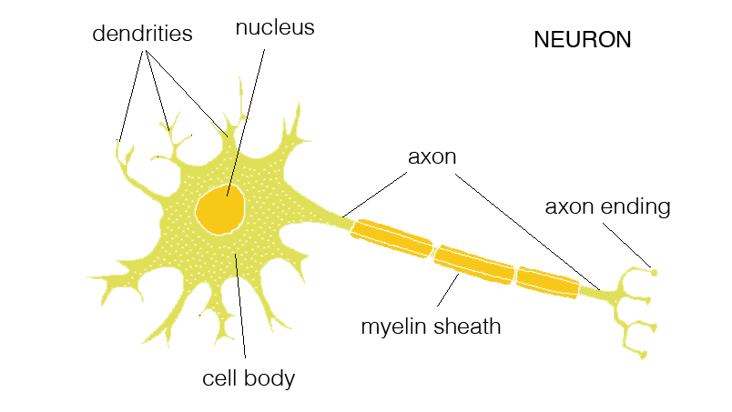
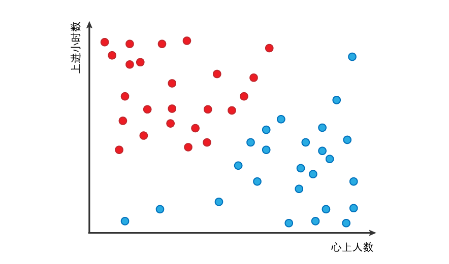

关键词： Perceptron Learning Algorithm 感应器算法基础 机器学习
最近在尝试edX这种新兴的学习方式，注册了一门机器学习的基础课程，虽说是基础，但对于我这种coding白痴且在大学没怎么学过数学的人来说并不容易。第一课就遇到了Perceptron Learning Algorithm（PLA，中文叫个感知器学习算法）这个算法，无奈课上老师讲的太快而WIKI上的信息又过于复杂，幸好看到一篇台湾小哥的文章，让我对这个概念才有了些认识。文章在墙外，特地总结留存：
算法来源及用途：
来源：算法灵感来自生物的神经元。简化模型如下：神经元从树突接收不同来源的信号，其中信号具正向效果、有些则是抑制效果，经过加权计算后，如果结果达到该神经元的阈值，则会将信号从轴突末端传出；否则不传出。

神经元(Neurons)，主要构造有树状突(Dendrites)、细胞体(Cell Body)与轴突(Axon)
用途：可作为判断使用。由多个输入的数据，经运算可产生一个二值的结果，用途广泛。例如通过收入、消费、贷款的数据，协助银行判断顾客是否可以办信用卡(可发/不可发)、协助使馆判断是否给申请者签证。
如何运用数据得到判断
一个例子：假设女性大脑中有一个功能是判断男人可不可以嫁的神经元，它只有两根树突，一根检测这男人用情专一程度、另一根检测他的上进心。接着我们得到了50个女性觉得婚姻幸不幸福的资料，其中红色的女性觉得婚姻幸福美满，蓝色的则是有家庭问题或离婚的，如下所示：

描述这些女人他们老公的资讯，用情专一度用“心上人数量”来代表，心上人越多则越不专情；上进心用“上进小时数”表示，小时数越高越上进
图中可以发现，心上人数越少且上进小时数越多的老公，越能带给家庭幸福。通过运行PLA结合现有的数据，经过处理，可以产生嫁与不嫁的预测答案。这些答案是透过数据训练得出的，所以没有经过训练的算法不会有分类功能。在这里必须给它先读过这些数据，才能从结果中归纳出衡量的准则（ “心上人数”少且“上进小时数”高才是可以嫁的男人)。
因此我们的目标是，建立一个函数，让未来只要知道某男人的“心上人数”与“上进小时数”，就能马上判断这男人可不可以嫁：
(心上人数* w1) + (上进小时数* w2) =一个数字 若这数字大于某个值，就表示可以嫁
如何计算对应函数
我们须要使用数学的方式找到合适的影响力(w1与w2)，使函数产生合理的结果。我们现有的数据是：
- 50个男配偶的心上人数、上进小时数 (用数组x表示)。x里面包含了x1~x50等50对配偶资料，且每对配偶资料又包含“心上人数”、“上进小时数”两个数值，因此可以把x1~x50都当作50个不同的向量→ (心上人数,上进小时数)
- 我们还必须假设一组数据，代表心上人数、上进小时数分别权重，这个权重会与每个男配偶数据相乘(作向量内积，*乘)，帮男配偶打一个分数。在这里我们用w代表这组数据，其中包含w1的心上人数与w2的上进时数。例如w = (-16, 12)，则第20号男人x20有1.2个心上人与7小时的上进，经过相乘后分数为64.8 = 1.2 * (–16)+ 7 * 12。
- 男配偶的老婆幸福与否 (只有幸福/不幸福两种选项)，这个函数我们取名为sign()。输入的的是某个男人的分数(例如64.8)，输出的是-1(代表不幸福)或+1(代表幸福)。
一开始，我们不知道w这组影响力的值，必须要通过既有的幸福/不幸福资料，去调整w，所以接下来进入到最核心的部分。起初，我们将w的值设定为(1,1)，并假设sign()分数大于60则为「可以嫁」，如此开始检查这样的w是否可以把第一个男人正确归类。我们将w与x1作向量内积并带入sign()中，假设得到+1(可以嫁)，我们再将这样的结果与统计结果对应，看看一号男人是否真的可以嫁；假设结果也是可以的，于是我们用这组影响力去检查2号男人。
如果发现2号男人sign()的答案是可以嫁，但实际上(统计中)二号男人不可以嫁，我们就要进行修正(让2号男变得不可以嫁)。修正的方法如下：
新的w = 旧的w + 2号男人实际上可不可以嫁* 2号男人的向量
其中，
- 2号男人实际上可不可以嫁：统计的结果，可嫁为+1，不能嫁为-1，2号男人在这里的值为-1
- 2号男人的向量：(2号男人的心上人数, 2号男人的上进时数)
如此因为新的w加上得负的2号男人向量，可以使2号男人的分数变低，接着就这样依序检查3~50号男人。如果存在一条可以分隔可嫁/不可嫁男人的线，Novikoff(1962)证明用这样的演算法可以在有限次数的反覆计算后得到答案。
总结
PLA其实是神经网路的基础，透过这一算法可以使电脑在已知的数据中找到规则，并套用到未知的相关资料，以达到预测的效果。但值得注意的是，不是所有的问题都适合用机器学习来解决，机器学习适用条件有三个：
1. 存在规律 | A pattern exists.
2. 不能用传统的方法归纳总结成数学公式 | We cannot pin it down mathmetically.
3. 有相关数据 | We have data on it.